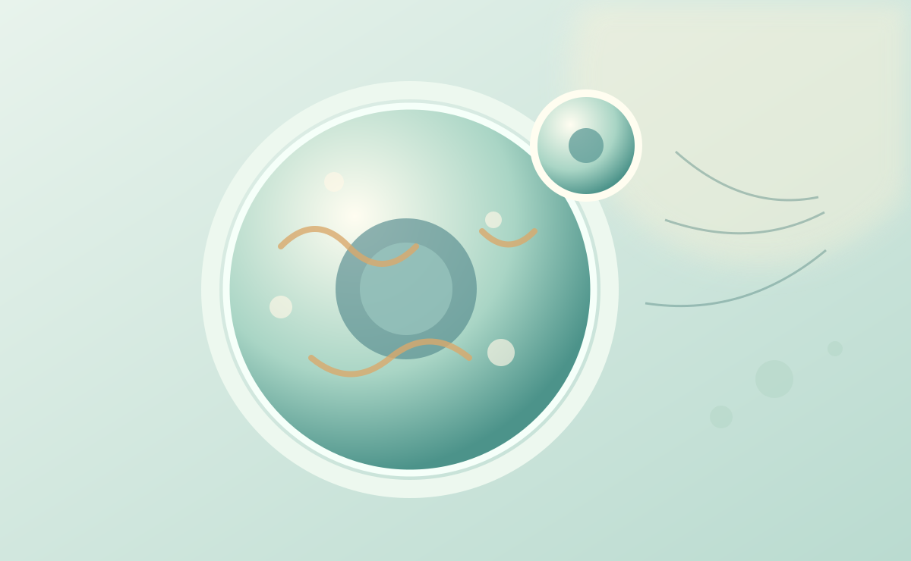

01 / 03MOLECULAR EMBRYOLOGY
The polar body as a molecular window
A small by-product of meiosis may carry informative traces of the oocyte. What can we learn from it, and where are the limits of interpretation?
Read the storyScience begins with questions. Explore three research narratives connecting early embryology, measurement, and interpretation.
Rather than listing techniques in isolation, these stories explain the scientific questions behind my work, how they can be approached, and what remains unresolved.

01 / 03A small by-product of meiosis may carry informative traces of the oocyte. What can we learn from it, and where are the limits of interpretation?
Read the story 02 / 03
02 / 03
Embryos develop through a sequence of transitions. Can the timing of those transitions be interpreted alongside molecular and cellular phenotypes?
Read the story 03 / 03
03 / 03
New technologies generate more information about embryos. What makes that information meaningful, fair, and appropriate for clinical use?
Read the storyThe cover images are conceptual illustrations, not microscopy or original experimental data. These narratives are editable drafts and do not claim clinical validation.